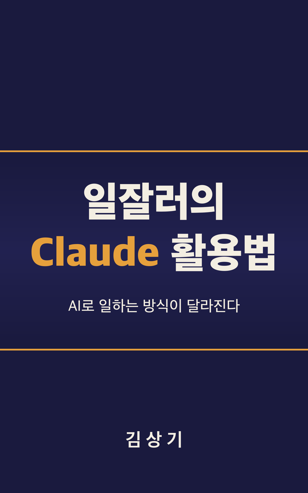

일잘러의
Claude 활용법
AI로 일하는 방식이 달라진다
"의심하되 활용하라"
이 책의 기본 태도

도구는 같은데, 결과는 왜 다를까
"AI를 쓰면 일이 빨라진다는데, 왜 내가 쓰면 별로인 걸까?"
머리말, 이 책이 시작된 질문
AI로 보고서를 뚝딱 만들어내는 동료가 있고, 같은 도구를 쓰면서도 "역시 AI는 아직 멀었어"라고 고개를 젓는 사람도 있습니다. 그 차이를 만드는 것은 도구가 아니라 "쓰는 법"입니다.
좋은 프롬프트로 초안을 받고, 사람이 검증해서 완성한다
| 단계 | Claude가 하는 것 | 사람이 하는 것 |
|---|---|---|
| 말 걸기 | 맥락·예시·형식을 받아 의도에 맞게 응답 | 프롬프트 5대 원칙으로 명확하게 지시 |
| 초안 | 흩어진 정보를 모으고, 구조화하고, 읽기 좋게 정리 | 원본 자료(회의록·메모·데이터)를 제공 |
| 검증 | 출처 제시, 계산 과정 설명 | 수치·날짜·고유명사 독립 검증, 최종 판단 |
| 정착 | Projects·체이닝·Cowork로 반복 실행 | 1주 → 1개월 → 3개월 → 6개월 로드맵 실행 |
"백지에서 시작하는 것과 80% 완성된 초안에서 시작하는 것은 완전히 다른 경험이다. 다만 그 80%를 100%로 만드는 과정에는 인간의 판단과 검증이 반드시 필요하다." (3장)
독자 유형마다 시작점이 다르다
대상 독자: 매일 보고서를 쓰고, 이메일을 보내고, 데이터를 정리하고, 기획서를 만드는 실무 직장인. 개발자가 아니어도, AI 전문가가 아니어도 괜찮다.
도구를 알고, 제대로 말 걸기
같은 Claude를 써도 누구는 탁월한 결과를, 누구는 평범한 결과를 얻는다. 먼저 도구를 이해하고, 그 차이를 만드는 프롬프트를 익힌다.
- 1장. AI 시대, 일하는 방식이 바뀌고 있다
- 2장. Claude, 제대로 알고 시작하자
- 3장. 프롬프트의 기술: Claude에게 제대로 말 걸기
이미 현실이 된 변화, 핵심 데이터 세 가지
원고 1장의 수치. 미국 노동자의 약 80%는 업무의 10% 이상이 AI의 도움을 받을 수 있는 영역이라고 답했고, 19%는 절반 이상이라고 답했다.
실무 직장인의 업무 대부분은 "글"이다
경쟁 모델과의 상세 비교는 부록 C(2026년 4월 기준).
내 업무에 맞는 Claude 고르기: 2026년 4월 기준 주요 모델 네 가지
| 모델 | 성격 | 이럴 때 |
|---|---|---|
| Claude Opus 4.7 | 현재 가장 강력. 응답이 상대적으로 느리고 토큰 소비가 많다 | 경영진 보고서, 전략 기획서, 복잡한 데이터 분석, 장문 계약 검토 |
| Claude Opus 4.6 | 한 단계 이전 버전, 여전히 강력한 범용 성능 | 글쓰기와 분석 업무 전반 |
| Claude Sonnet 4.6 | 속도와 성능의 균형, 대부분의 직장인에게 "기본값" | 이메일, 회의록 정리, 일반 보고서, 번역, 콘텐츠 초안 |
| Claude Haiku 4.5 | 가장 빠르고 가벼움, 비용도 가장 낮다 | 짧은 텍스트 분류, 간단한 질문, 빠른 요약 |
처음에는 Sonnet으로 시작해서, 결과물의 깊이가 부족하다고 느낄 때 Opus로 올린다. 6개월 이상 사용한 숙련자들이 이런 "모델 선택 지능"을 보인다.
세 가지만 확실히 알아두자
2026년 2월부터 Projects, Artifacts, 앱 커넥터 접근까지 Free 플랜 사용자에게 개방되었다. 플랜: Free → Pro → Max → Team/Enterprise(권한 관리, SSO).
실무 문서를 통째로 다룰 수 있는 작업 공간
매우 긴 대화를 계속 이어가면 초반 맥락이 희미해질 수 있다. 핵심 맥락만 다시 정리해 새 대화를 시작하고, Projects로 상당 부분 완화한다.
맥락 없는 동료가 이해할 수 있는가
프롬프트를 맥락이 없는 동료에게 보여줬을 때, 그 동료가 혼란스러워한다면 Claude도 마찬가지다.
3장
Claude는 새로 합류한 똑똑한 동료와 같습니다. 능력은 뛰어나지만, 당신의 업무 맥락은 모릅니다. 그 동료에게 일을 맡기듯, 충분한 배경과 명확한 지시를 주어야 좋은 결과가 나옵니다.
원칙마다 뒷장의 실무 시나리오로 이어진다
| 원칙 | 핵심 | 이어지는 장 |
|---|---|---|
| 1. 명확하고 직접적으로 | "좋은 보고서 써줘" 대신 무엇을·형식·포함 항목·톤·대상 독자를 적는다 | 4장 보고서 |
| 2. 맥락을 함께 건네자 | "줄임표를 사용하지 마"에 "TTS 엔진이 읽을 거야"라는 왜를 더한다 | 5장 데이터 분석 |
| 3. 예시를 보여주자 | Few-shot Prompting: 3~5개의 잘 선택된 예시, 반례(Counter-example) 하나 | 6장 기획서 |
| 4. XML 태그로 구조를 잡자 | 지시·원본 데이터·출력 형식을 태그로 분리 | 4장 회의록 구조화 |
| 5. 역할을 부여하자 | "당신은 10년 경력의 비즈니스 커뮤니케이션 전문가입니다" | 7장 이메일 |
역할을 부여할 때 실존 인물은 지정하지 않는다. "스티브 잡스처럼 발표해줘"보다 역할을 풀어 쓴 지시가 더 안정적이다.
어디가 지시이고 어디가 데이터인지 태그로 가른다
<instructions>
다음 회의록을 바탕으로 액션 아이템 목록을 추출해줘.
각 항목에 담당자, 기한, 우선순위를 포함해줘.
</instructions>
<meeting_transcript>
{회의 녹취록 전문}
</meeting_transcript>
<output_format>
| 액션 아이템 | 담당자 | 기한 | 우선순위 |
|------------|--------|------|---------|
</output_format>태그 이름은 자유롭게: <context>, <input>, <rules>, <persona>. 중요한 것은 "역할이 다른 텍스트 블록을 태그로 분리한다"는 습관이다.
핵심 지시는 한국어로, 구조와 기술 용어는 영어로
다음 고객 피드백 데이터를 분석해줘. <instructions> 1. Sentiment analysis를 수행해서 positive/negative/neutral로 분류 2. 주요 pain point를 frequency 순으로 정리 3. 각 카테고리별 representative quote를 1개씩 선정 </instructions> 결과는 한국어로 작성하되, 카테고리명은 영어로 유지해줘.
톤도 명시한다. 보고서는 "~입니다" 격식체, 이메일은 "~드립니다" 정중체, 슬랙은 편한 말투로 3줄 이내. 번역투가 나오면 "한국 직장인이 실제로 사용하는 표현을 써줘".
자신감 있게 틀리는 AI가 가장 위험하다
2025년의 수학적 증명에 따르면 현재의 대규모 언어 모델 아키텍처에서 할루시네이션은 구조적으로 완전히 제거할 수 없다. 신뢰하되 검증하고, 의심하되 활용하자.
매일 마주하는 업무에 적용하기
보고서 작성, 데이터 분석, 기획과 전략, 이메일과 커뮤니케이션이 이 책의 중심이다. 각 장은 독립적으로 읽을 수 있으니, 당장 급한 업무 영역부터 펼쳐도 좋다.
- 4장. 보고서와 문서, Claude가 초안을 잡는다
- 5장. 데이터를 읽는 눈: 분석과 시각화
- 6장. 기획과 전략: 리서치에서 발표자료까지
- 7장. 소통의 기술: 이메일, 번역, 콘텐츠
한 번에 "보고서 써줘" 대신 세 단계로
<meeting_notes> 태그로 감싼다.두 단계로 나누면 중간에 사람이 확인하고 수정할 여지가 생긴다. 1단계에서 잘못 추출했다면 그 부분만 교정하면 된다.
30분 남은 월간 보고서: 오후 2시 30분, 마감은 3시
| 시간 | 할 일 |
|---|---|
| 0~5분 | 주간 보고서 4건·프로젝트 현황 메모·팀 회의록 2건을 태그로 나눠 넣고 "전체 목차와 각 섹션에 들어갈 핵심 포인트"부터 요청 |
| 5~10분 | 뼈대 확인 및 보완: "마케팅팀 피드백 지연이 원인이야"처럼 사람만 아는 맥락을 보충 |
| 10~20분 | 본문 작성: 경어체, 수치에는 전월 대비 증감, 이슈에는 해결 방안 |
| 20~25분 | 검토 및 수정: 주간 수치를 월간으로 합산한 부분은 반드시 직접 계산 |
| 25~30분 | 최종 톤 조정 및 제출 |
이 시나리오에서 Claude는 보고서의 "내용"을 만들어내지 않았다. 내용은 이미 주간 보고서와 회의록에 있었다. Claude의 역할은 흩어진 정보를 모으고, 구조화하고, 읽기 좋은 형태로 정리하는 것이다.
모든 문서 작성에 공통으로 적용되는 네 가지 원칙
- 원본 데이터를 반드시 제공하자. 회의록, 메모, 데이터 없이 "보고서를 써줘"라고만 하면 일반적이고 피상적인 내용만 나온다.
- 형식과 톤을 명시하자. 경영진에게는 1페이지 요약과 핵심 수치, 팀 내부에는 상세한 진행 상황.
- 단계별로 진행하자. 뼈대 → 초안 → 퇴고. 중간에 방향을 수정할 수 있어 오히려 시간이 절약된다.
- 최종 검토는 사람이 하자. 조직 내부의 맥락, 정치적 뉘앙스, 미묘한 표현의 차이는 사람만이 판단할 수 있다.
커뮤니티 팁: "초안은 Claude, 퇴고는 사람이 하세요." 그대로 제출하면 "어딘가 Claude 냄새가 난다"는 느낌을 받는 사람이 있다.
Analysis Tool은 Python 코드를 실제로 실행한다
텍스트 응답에서는 수치를 "추정"하지만, Analysis Tool은 실제 계산을 수행해 합계·평균 같은 기본 연산의 정확도가 크게 올라간다. 코드에 논리 오류가 있을 수 있으니 맹신하지 않는다.
퍼널 데이터에서 어디서 이탈하는지 찾는다
다음 퍼널 데이터를 분석해서 전환율 개선 기회를 찾아줘. <funnel_data> 단계 | 유입 수 방문 | 10,000 회원가입 | 2,500 상품 조회 | 1,800 장바구니 | 600 결제 시도 | 350 결제 완료 | 280 </funnel_data> 분석해줄 것: 1. 각 단계별 전환율과 이탈률을 계산하고 퍼널 차트 시각화 2. 가장 큰 이탈이 발생하는 단계 식별 3. 업계 평균과 비교했을 때 특히 개선이 필요한 단계 (이커머스 평균 전환율 기준) 4. 각 이탈 포인트에 대한 개선 가설 제안
Claude가 "업계 평균"이라며 제시하는 수치는 주의가 필요하다. 실제 업계 평균은 업종, 지역, 시점에 따라 다르다. "출처와 함께 답변해줘"를 추가한다.
가장 위험한 것은 "틀린 숫자를 확신하는 것"
"So What?"도 명시하자. "3월 이탈률이 15%입니다"보다 "월 매출 약 2천만 원의 손실을 의미합니다"가 의사결정에 도움이 된다(5장의 예시).
각 단계가 앞 단계의 산출물을 입력으로 받는 체인
커뮤니티 팁: "리서치는 Claude로 시작하되 Claude로 끝내지 마세요." 시장 규모, 성장률, 경쟁사 정보는 1차 출처에서 확인한다.
발산 → 평가 → 정제의 루프
Claude가 아이디어를 대신 내는 것이 아니라, 사고의 폭을 넓히고 구조를 잡아주는 역할을 한다.
48시간 안에 기획안 완성: 수요일 오후에 받은 과제, 금요일 오후 발표
| 시간 | 할 일 |
|---|---|
| 수요일 오후 (4시간) | 리서치와 분석: 시장 조사 요청, 핵심 데이터 교차 검증, SWOT·Five Forces, 하나의 마크다운 문서로 통합 |
| 목요일 오전 (4시간) | 기획서 작성: 구조 설계, 섹션별 본문, 논리 흐름 점검 |
| 목요일 오후 (4시간) | 발표자료 제작: 스토리라인 확정, 차트·다이어그램, 발표 스크립트와 Q&A 예상 질문 |
| 금요일 오전 (3시간) | 리허설과 최종 점검: 시간 배분 확인, 수치 최종 검증 |
Claude는 정보 수집의 시작점, 분석의 틀, 글의 초안, 발표 구조를 준다. 사람은 수치의 정확성을 검증하고, 조직의 맥락을 반영하고, 최종 판단의 논리를 다듬는다.
악마의 변호인 역할을 맡겨 보자
이 기획서를 비판적으로 검토해줘. 악마의 변호인 역할로. 다음을 지적해줘: 1. 논리적으로 약한 부분 2. 데이터가 뒷받침하지 않는 주장 3. 경쟁사가 쉽게 따라할 수 있는 차별화 포인트 4. 낙관적 편향이 보이는 예측 5. 놓치고 있는 리스크 각 지적 사항에 대해 구체적인 보완 방안도 함께 제시해줘.
함께 쓰는 기법: 기획서에 깔린 주요 가정(assumption)을 목록화해 영향도·검증 수준을 매기고, 경쟁사 A(시장 1위)의 전략 담당자 관점에서 기획안을 분석한다.
<situation> 태그 안에 관계·배경·긴급도를 모두 넣는다
| 유형 | 톤 지시 | 핵심 |
|---|---|---|
| 요청 | 정중하되 친근하게. 부담을 주지 않으면서 기한을 명확히 | 지나치게 지시적이면 반감, 지나치게 겸손하면 긴급도가 안 전달된다 |
| 거절 | 감사를 표하되, 거절 의사를 명확하게 | "검토 중입니다" 같은 모호한 표현은 잘못된 기대를 준다 |
| 사과 | 진심 어린 사과 + 구체적 대응 방안. 변명이 아닌 해결책 중심 | 사과, 원인 설명, 수정 일정, 재발 방지 대책 |
| 공지 | 친근하되 필요한 정보가 빠짐없이 | 변경 사항 요약 → 상세 일정 → 교육 안내 → FAQ → 문의처 |
커뮤니티 팁: 민감한 이메일은 "받는 사람 입장에서 이 이메일을 읽으면 어떤 느낌을 받을까?"라고 물어보자.
번역은 "의미를 옮기는 것": <translation_guide>를 상세하게
<translation_guide> 번역 원칙: - 직역이 아닌 의역 중심. 영어권 독자가 자연스럽게 읽을 수 있도록. - 한국어의 경어체/격식체 뉘앙스를 영어의 적절한 레지스터로 변환 - 한국 시장 고유 용어는 영어 표현 + 괄호 안에 원어 병기 예: "대리점 (dealership network)" - 한국 업무 문화에 특유한 표현은 문맥에 맞게 풀어서 설명 예: "품의서" → "internal approval request form" - 수치의 단위 변환: 억 원 → million KRW, 만 명 → thousand people </translation_guide>
영문 이메일은 "생각은 한국어로, 표현은 영어로". 마케팅 카피는 현지화를 요청하고 격식체·친근체·임팩트형 3가지 버전을 받아 고른다.
같은 사실을 다섯 가지 톤으로
다음 문장을 5가지 톤으로 다시 써줘. 원문: "프로젝트 일정이 2주 지연될 예정입니다." 톤: 1. 격식체 (경영진 보고용) 2. 정중체 (클라이언트 이메일용) 3. 캐주얼 (팀 슬랙 메시지용) 4. 긴급 (위기 상황 공지용) 5. 긍정적 프레이밍 (부정적 내용을 건설적으로 전달)
"정중하되 단호하게", "친근하되 전문적으로", "간결하되 따뜻하게" 같은 톤 지시어를 몇 개 만들어 두자. 브랜드 보이스 가이드는 Projects의 시스템 프롬프트에 저장한다.
번역이 아니라, 같은 내용을 두 문화로 따로 쓴다
한국어 버전은 "잘 부탁드립니다"로,
영어 버전은 "I look forward to working with each of you"로.
7장, Project Phoenix 킥오프 이메일 시나리오
한국 개발팀 8명, 미국 본사 프로덕트팀 5명, 인도 QA팀 4명. 한 번의 프롬프트로 두 버전을 각각 독립적으로 작성하면, 하나를 쓰고 번역하는 것보다 각 버전의 완성도가 높아지고 시간도 절약됩니다.
시스템으로 확장하고, 안전하게 정착시키기
단발성 대화를 넘어 업무 전체를 하나의 흐름으로 설계한다. 그리고 조직에서 안전하고 책임감 있게 쓰는 법, 내일부터의 로드맵.
- 8장. 한 단계 위로: 고급 활용과 워크플로우 확장
- 9장. AI를 똑똑하게 쓰는 조직: 보안, 윤리, 정책
- 10장. 내일부터 시작하는 실무 적용 로드맵
프로젝트의 핵심은 시스템 프롬프트다
당신은 B2B SaaS 기업의 고객 성공팀 분석가입니다. 역할: - 고객 피드백을 카테고리별로 분류합니다 - 각 카테고리에서 핵심 인사이트를 추출합니다 - 경영진 보고에 적합한 요약을 작성합니다 출력 형식: - 카테고리별 피드백 수와 비율 - 각 카테고리의 대표 의견 3개 - 전체 요약 (200자 이내) - 즉시 조치가 필요한 항목 (있을 경우) 톤: 객관적, 데이터 기반, 간결
업무 단위로 프로젝트를 나누자. 하나의 프로젝트에 모든 업무를 몰아넣으면 맥락이 뒤섞여 오히려 정확도가 떨어진다. 보고서 양식·용어집·브랜드 가이드라인은 참고 파일로 올린다.
각 단계의 출력을 다음 단계의 입력으로: 사이마다 사람이 확인
[1단계] "다음 회의록에서 핵심 결정사항, 액션 아이템, 논의 중 이슈를 추출해줘."
↓ 출력 확인 및 수정
[2단계] "위 분석 결과를 바탕으로 경영진 보고서 구조를 설계해줘.
포함 섹션: 요약, 주요 결정사항, 액션 아이템, 리스크."
↓ 출력 확인 및 수정
[3단계] "설계한 구조에 맞춰 보고서 본문을 작성해줘. 톤은 객관적, 분량은 A4 1장."번역 --> 현지화 --> 검수 체인도 유용하다. 한 번에 모든 것을 맡기면 중간의 오류가 최종 결과까지 흘러가 버린다.
Claude Cowork와 Extended Thinking
Extended Thinking과 프롬프트 체이닝을 결합하면 효과가 더 커진다.
개발 경험이 없어도 "이런 것이 가능하구나"를 파악하면 충분하다
MCP는 2026년 1월 출시 시 11개의 플러그인으로 시작했고, 이후 마켓플레이스가 열리면서 빠르게 확장 중이다(원고 기준). 설정이 어렵다면 팀의 개발자에게 도움을 요청한다.
유출되면 문제가 되는 데이터는 넣지 않는 것이 안전하다
| 구분 | 예 |
|---|---|
| 넣어도 되는 것 | 이미 공개된 정보, 비식별화된 데이터, 회사 내부에서 일반적으로 공유되는 수준의 업무 정보 |
| 고객 개인정보 | 이름, 연락처, 주소, 구매 이력 등 개인을 식별할 수 있는 정보 |
| 사내 기밀 | 미공개 사업 계획, 재무 데이터, 인사 정보, 계약서 세부 내용 |
| 인증 정보 | 비밀번호, API 키, 토큰, 인증서 |
| 법적 제한 데이터 | 법률이나 규제로 외부 처리가 제한된 정보 |
Anthropic의 정책에 따르면 대화 내용은 모델 학습에 사용되지 않는다. 하지만 데이터가 외부 서버로 전송된다는 사실 자체가 보안 정책에 위배될 수 있다. Team·Enterprise 플랜은 더 강화된 데이터 보호 정책을 제공한다.
분석 가치는 유지하고 프라이버시는 지킨다: "AI 활용의 기본 전처리"
| 패턴 | 예 |
|---|---|
| 이름 대체 | "김민수" → "고객A", "이영희" → "고객B" |
| 연락처 제거 | 전화번호, 이메일 주소는 과감히 삭제 |
| 날짜 일반화 | "2026년 3월 15일" → "2026년 3월" 또는 "2026년 1분기" |
| 금액 범위화 | 정확한 거래 금액 대신 "100만원~500만원 구간" |
마스킹 작업 자체도 Claude에게 요청할 수 있지만 원본 데이터가 AI에 전송된다는 점은 같다. 정말 민감한 데이터라면 수작업으로 마스킹한 후 입력한다.
처음부터 완벽할 필요 없다, 핵심 원칙 몇 가지로 시작
AI 생성물은 "초안"으로 취급하자. 사람이 검토하고 수정하는 과정에서 인간의 창작적 기여가 더해지고, 결과물의 품질도 올라간다.
"언젠가 해봐야지"를 "이번 주에 이것부터"로
| 시기 | 목표 | 할 일 |
|---|---|---|
| 1주차 | 첫 발을 떼자 | 가장 단순한 반복 업무 하나, 3장 기본기 적용, 결과를 반드시 검토 |
| 1개월차 | 루틴으로 정착 | 주요 업무 3개에 연결, 잘 작동한 프롬프트 저장(부록 A), 한영 혼용 실험 |
| 3개월차 | 시스템으로 확장 | Projects 본격 활용, 프롬프트 체이닝, 팀원과 경험 공유 |
| 6개월차 | 팀의 AI 문화 | 팀 내 AI 활용 가이드, 동료에게 노하우 전파, 자신의 성장 돌아보기 |
1주차 점검 질문: "Claude 덕분에 실제로 시간이 절약된 업무가 하나라도 있는가?" 목표는 80점짜리 초안을 3분 만에 받고, 나머지 20점을 사람이 채우는 것이다.
"글쓰기와 분석은 Claude, 이미지 생성은 ChatGPT, Google 연동은 Gemini."
| 업무 | 1순위 추천 | 이유 |
|---|---|---|
| 보고서/기획서, 이메일, 번역 | Claude | 글쓰기 품질과 톤 제어, 자연스러운 표현 |
| 이미지 생성 · 음성 대화 | ChatGPT | DALL-E 내장, 가장 자연스러운 음성 인터랙션 |
| 이미지/비디오 분석 · Google Workspace 연동 | Gemini | 네이티브 멀티모달, Gmail·Docs·Sheets 통합 |
| 대용량 문서(100p+) / 장문서 정밀 분석 | Gemini / Claude | 1M+ 토큰 윈도우 / 200K 토큰 내 정확도 |
부록 C의 용도별 추천 가이드 발췌, 비교 대상은 ChatGPT(GPT-5)·Gemini(2.5 Pro), 2026년 4월 기준. 특정 모델을 고집하기보다 업무에 맞는 도구를 선택하는 유연한 사고가 필요하다.
차이는 도구가 아니라 쓰는 법에서 난다
AI는 도구이고, 도구는 사용자의 역량만큼 성능을 발휘한다.
1장, 한 가지 당부
좋은 질문을 던지고, 결과를 비판적으로 검토하며, 최종 판단은 사람이 내립니다. Claude가 기획의 "효율"을 높여준다면, 사람은 기획의 "방향"을 결정합니다.
내일 아침, 프롬프트 하나
- 오늘 해야 할 업무 중 하나를 골라 Claude를 열고 프롬프트를 입력해 보자. 첫 번째 프롬프트는 어설퍼도 괜찮다.
- 맥락을 제공하고, 구체적으로 요청하고, 원하는 형식을 명시한다. 이 세 가지만 지켜도 결과가 달라진다.
- 수치와 날짜와 고유명사는 반드시 독립 검증한다.
- 잘 작동한 프롬프트는 저장해 두고, 반복 업무는 Projects로 옮긴다.
"이 책을 덮은 뒤부터가 시작이다. AI는 매달 새로운 모습으로 진화하고, 우리의 활용법도 함께 진화해야 한다." (에필로그)
함께 일하자,
Claude와.
일잘러의 Claude 활용법: AI로 일하는 방식이 달라진다
당신의 내일이 오늘보다 조금 더 가벼워지기를 바란다. (에필로그)